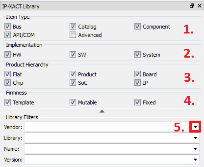

Library Navigation
How to access IP-XACT documents and open them for editors.
VLNV Tree
Documents are sorted to VLNV tree based on the VLNV tuple of a document.
- Select VLNV tree.
- Browse to the desired document, double click to open.
- Right click for context menu. The additional options include opening and creating designs.
- The external interfaces and ad-hoc ports are illustrated in the preview.

Hierarchy Navigation
Documents are sorted to hierarchy display based on their position in designs and sub designs.
- Select hierarchy.
- Hierarchical components are expandable, displaying the associated designs and the components that have instances in the design.
- Hierarchical navigation is recursive, so that a design within a design is also expandable.
- This column displays how many instances in the design use the component.

Library Filters
You may limit the number of displayed IP-XACT documents using filters:
- Hide/show filters
- Only documents which type is checked are displayed. Advanced stands for designs and design configurations.
- Hide documents that do not match the implementation. For instance, unchecking HW hides all hardware components and buses.
- Hide components that do not match any checked hierarchy level.
- Hide components that do not match any checked firmness level.
- Hide documents that have no errors or do have errors.
- Hide documents that do not have the tags listed here.
